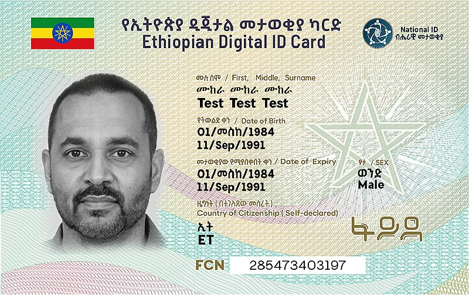

Established in 2018, Hurunguu is a private technology firm dedicated exclusively to the public sector and rooted in Ethiopian sovereignty. We deliver high-consequence technology to government institutions, powering digital government and secure e-governance across Africa.
